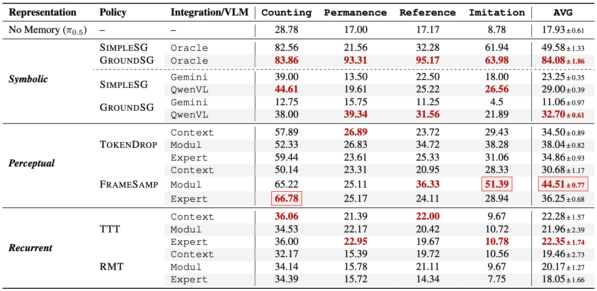
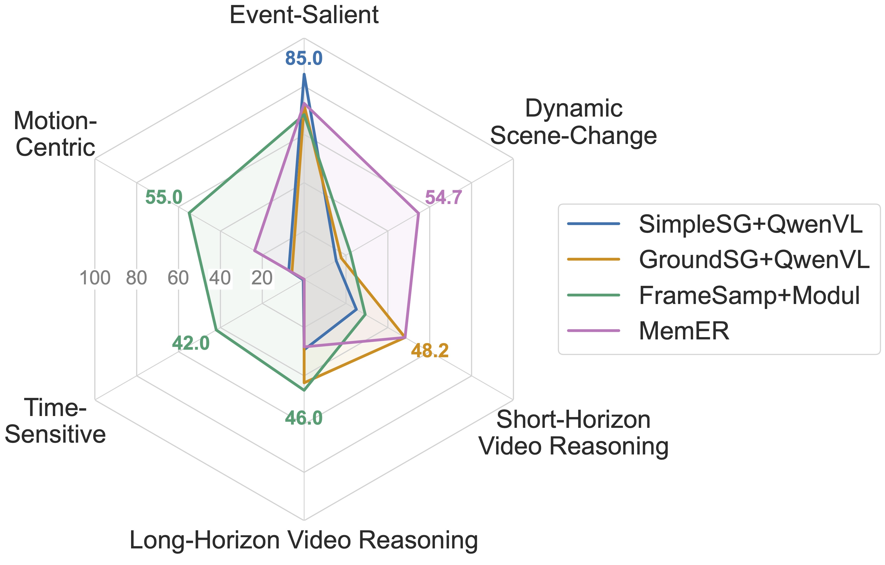
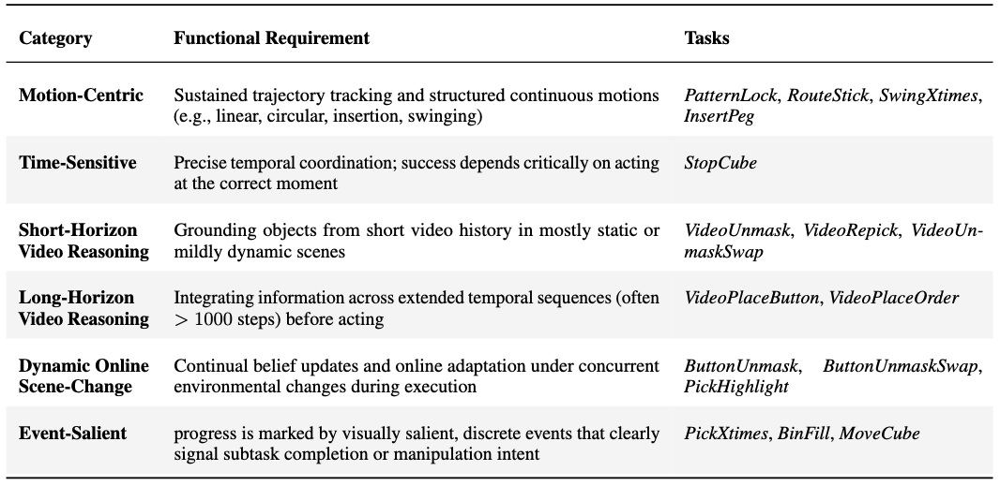
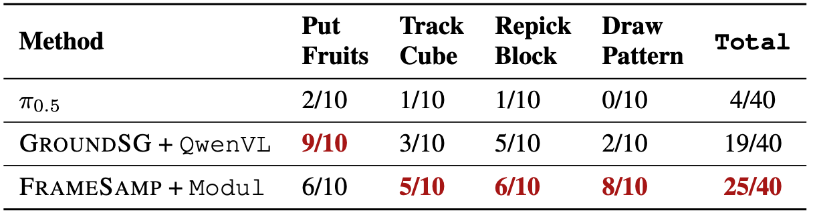

RoboMME Experiments
We fine-tune a total of 14 memory-augmented VLA variants based on π0.5:
- Symbolic Memory Variants: SimpleSG (Simple Subgoal) or GroundSG (Grounded Subgoal), and leverage Gemini (prompt-based Gemini-2.5-Pro), QwenVL (fine-tuned Qwen3-VL-4B), or Oracle (simulator ground-truth) as subgoal predictors → 2 VLA variants & 3 subgoal predictors
- Perceptual Memory Variants: TokenDrop (Token dropping) or FrameSamp (Frame sampling), combined with Context (memory-as-context), Modul (memory-as-modulator), or Expert (memory-as-expert) integration mechanisms → 2 × 3 = 6 VLA variants
- Recurrent Memory Variants: TTT (Test-Time Training) or RMT (Recurrent Memory Transformer), combined with Context (memory-as-context), Modul (memory-as-modulator), or Expert (memory-as-expert) integration mechanisms → 2 × 3 = 6 VLA variants
| Memory Representation | Method | Subgoal Predictor | Integration Mechanism |
|---|---|---|---|
| Symbolic | SimpleSG, GroundSG | Gemini, QwenVL, Oracle | -- |
| Perceptual | TokenDrop, FrameSamp | -- | Context, Modul, Expert |
| Recurrent | TTT, RMT | -- | Context, Modul, Expert |
Naming Convention: Method+Integration Mechanism/Subgoal Predictor, e.g., FrameSamp+Modul or SimpleSG+QwenVL
Key Takeaways:
- There is no “one-size-fits-all” memory design: No single representation or integration strategy dominates across all tasks.
- Symbolic memory excels at counting and visual grounding, while perceptual memory is essential for motion mimicking.
- Memory-as-Modulator is the most effective integration strategy for perceptual memory.
More specifically, we investigate the following research questions (RQs):
▶ RQ1: Which memory representations and integration mechanisms yield the strongest performance?
Across all MME-VLA variants:
- Memory Representation: Perceptual Memory > Symbolic Memory > Recurrent Memory
- Integration Mechanism: Memory-as-Modulator > Memory-as-Expert > Memory-as-Context
- Within Perceptual Memory: Frame Sampling > Token Dropping
- Within Symbolic Memory: Grounded Subgoal > Simple Subgoal
- Recurrent Memory performs worst likely due to training instability

▶ RQ2: Is high-level symbolic reasoning alone sufficient for memory-augmented manipulation?
High-level symbolic reasoning is powerful yet not sufficient on its own:
- As the upper bound of symbolic memory, GroundSG+Oracle successfully solves many tasks (84% overall success rate), confirming the strong representational capacity of language for high-level reasoning (see leaderboard).
- Performance still degrades on manipulation-intensive tasks such as StopCube and InsertPeg, where language offers limited guidance and precise visuomotor control becomes the primary bottleneck.
- The VLA policy still struggles in cluttered scenes, often manipulating wrong objects and causing unintended collisions despite unambiguous subgoals (see simulation demo below).
▶ RQ3: How do humans perform on RoboMME?
Humans are strong but not perfect on RoboMME:
- We reformulate each task into an online VideoQA problem: videos are revealed incrementally, humans choose the next high-level action from a fixed candidate set, and an oracle planner executes actions perfectly.
- Humans reach 90.5% success but still fail to fully solve the benchmark, with consistent errors on long-horizon tasks (e.g., PatternLock) and time-sensitive tasks (e.g., StopCube) (see leaderboard).
- RoboMME therefore remains challenging and serves as a rigorous testbed for memory-augmented policies.
▶ RQ4: How does the effectiveness of different memory designs depend on task characteristics?
Different memory designs provide complementary strengths:
- Symbolic Memory excels on Event-Salient (e.g., counting) and Short-Horizon Video Reasoning tasks
- Perceptual Memory excels on Motion-Centric and Time-Sensitive tasks
- MemER (Sridhar et al., 2025) excels on Dynamic Scene-Change tasks due to its reuse of all past keyframe images

To better analyze the effectiveness of memory representations, we group the 16 tasks by their primary functional requirements as shown below:

View radar chart by task characteristics on the leaderboard →
▶ RQ5: How does memory affect the efficiency-performance balance of memory-augmented policies?
Perceptual memory achieves the best efficiency-performance balance:
- FrameSamp/TokenDrop+Modul: consistent gains with modest cost increase
- SimpleSG/GroundSG+QwenVL: ~3× computation of π0.5
- MemER (Sridhar et al., 2025): ~5× computation of π0.5

▶ RQ6: Do the trends observed on RoboMME transfer to real-world robotic manipulation?
Yes. We evaluate four real-world tasks designed to mirror simulation tasks on each task suite:
- Counting: PutFruits → BinFill
- Permanence: TrackCube → VideoUnmask/VideoUnmaskSwap
- Reference: RepickBlock → VideoRepick
- Imitation: PatternLock → DrawPattern
The results exhibit similar patterns: Symbolic Memory performs best on counting (PutFruits), while Perceptual Memory excels on motion-centric tasks (DrawPattern). On the remaining tasks, both achieve comparable performance.

